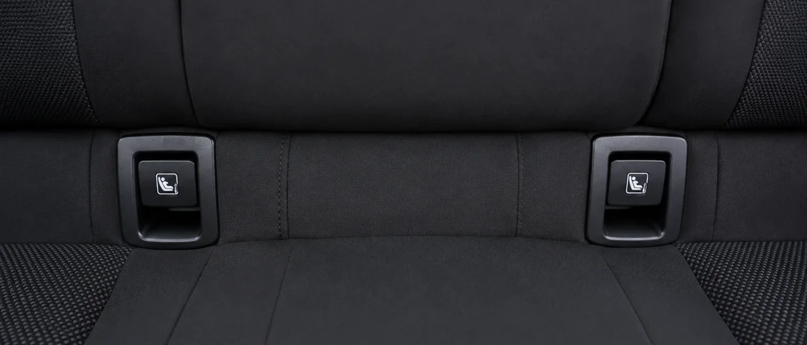
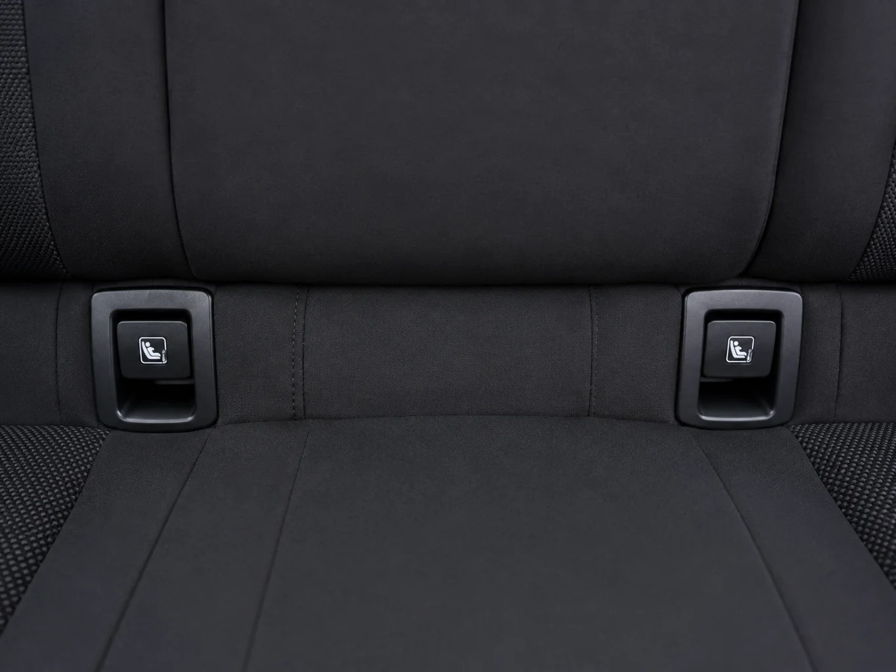
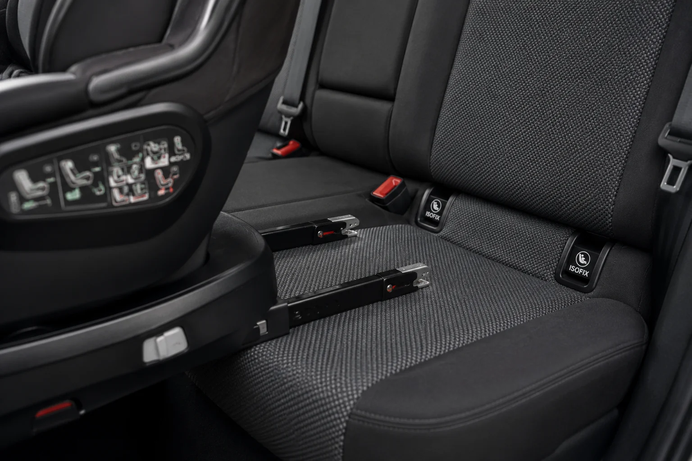
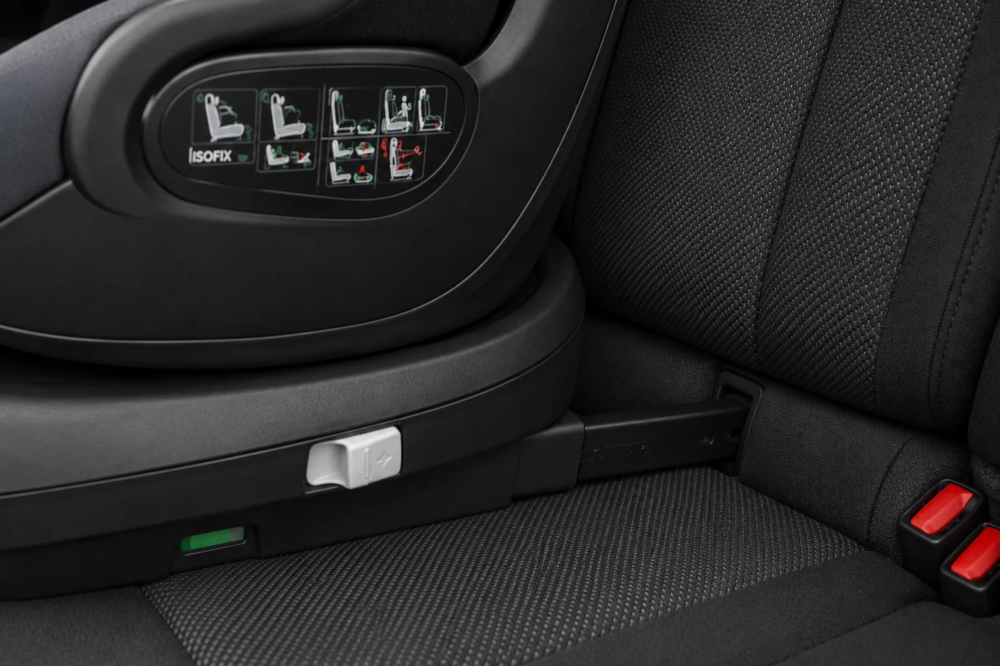
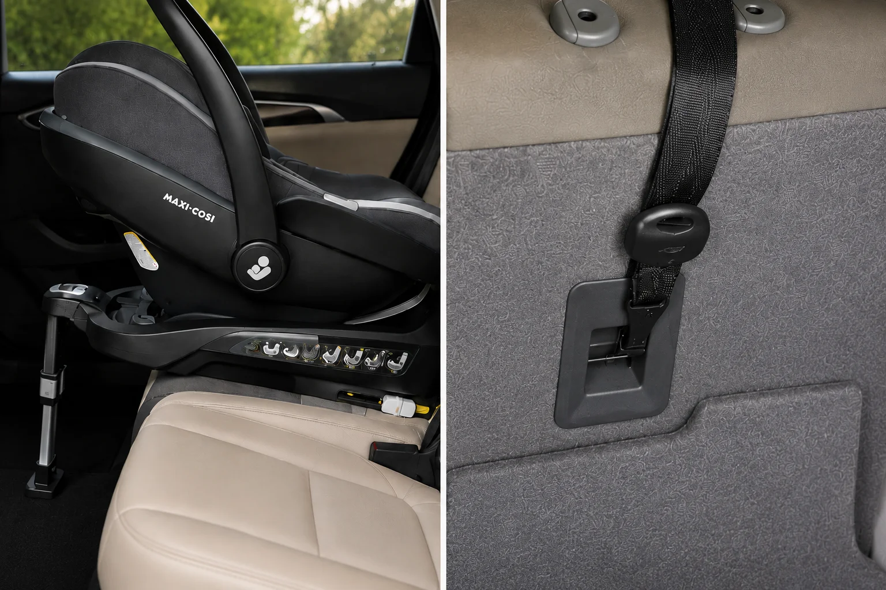
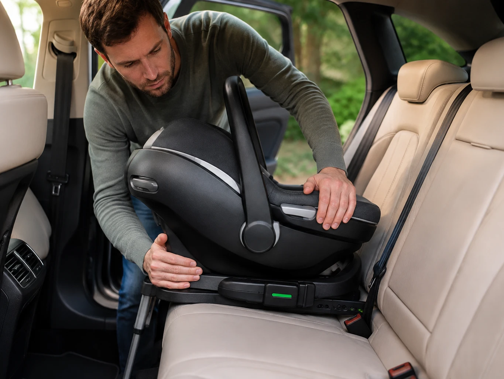
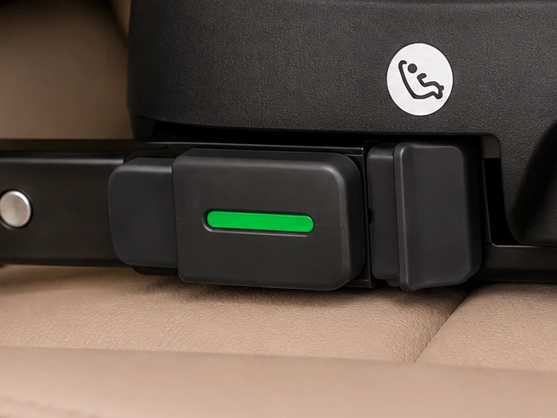

¿Qué es Isofix y por qué se recomienda?
Isofix es un sistema de anclaje que fija la silla de coche directamente a puntos metálicos integrados en la carrocería del vehículo, en vez de sujetarla con el cinturón de seguridad. Esto reduce el margen de error en la instalación — uno de los principales motivos de mal uso de las sillas infantiles — y limita el movimiento de la silla en caso de impacto.
Todos los coches fabricados en la UE desde 2006 llevan anclajes Isofix de serie, así que en la gran mayoría de los casos no tienes que preocuparte por la compatibilidad.
Isofix vs. instalación con cinturón: diferencias clave
Cómo instalar una silla Isofix paso a paso
La instalación varía ligeramente según el modelo, pero el proceso general es el mismo en la mayoría de sillas Isofix. Revisa siempre el manual de tu silla para los detalles específicos:
-
Localiza los anclajes del coche. Están situados entre el respaldo y el asiento del vehículo. Si no los ves a simple vista, consulta el manual del coche.

-
Despliega los conectores de la silla. Suelen activarse con una palanca o botón en la base y quedan totalmente extendidos antes de encajarlos.

-
Encaja la silla en los anclajes. Empuja firmemente hacia el respaldo hasta notar o escuchar el clic de bloqueo en los dos conectores.

-
Fija el punto de apoyo adicional. Según el modelo, será una pata de apoyo que baja hasta el suelo del coche o una correa Top Tether que se ancla en el maletero — ambos reducen el movimiento de la silla en un impacto.

-
Comprueba que queda firme. Tira de la silla desde la base hacia delante y hacia los lados: no debería moverse más de 2-3 cm.

-
Revisa los indicadores de seguridad. La mayoría de sillas Isofix llevan testigos que pasan de rojo a verde en cada conector y en el punto de apoyo cuando la instalación es correcta.

Ante cualquier duda sobre la normativa de homologación o los puntos de anclaje de tu coche, consulta la guía de normativa DGT e i-Size.
¿Isofix en todos los grupos?
Isofix está disponible en prácticamente todos los grupos de silla (0+, 1, 2, 3 y evolutivas), aunque en el grupo 2-3 muchas veces se combina con el cinturón del propio coche para la parte superior del cuerpo.
- Grupo 0 y recién nacido → guía específica
- Grupos 1, 2 y 3 (evolutivas) → guía específica
¿Qué marca de sillita de coche elegir?
Compara las principales marcas de sillitas de coche y descubre sus diferencias antes de elegir la que mejor se adapte a tu familia.
Sillas de coche con Isofix destacadas
Seleccionamos modelos con Isofix de las marcas más buscadas, no de una sola marca, para que puedas comparar directamente:

Cloud G i-Size Comfort
Capazo i-Size para los primeros meses, ligero (3,9 kg) y a contramarcha, pensado para instalarse con la Base G de Cybex (se vende aparte) y compatible como sistema de viaje con cochecitos Cybex/gb mediante adaptador.
Características principales
Lo que destacan las familias
Lo sencillo que resulta instalarla —tanto con Isofix como solo con el cinturón— y su compatibilidad con los cochecitos Cybex mediante adaptadores, para usarla también como sistema de viaje.

Unico EVO I'Size Classic
Silla evolutiva de Grupo 0/1/2/3 que acompaña desde el nacimiento hasta los 12 años, con giro de 360° para facilitar la colocación del niño y anclaje Isofix con Top Tether en la primera etapa.
Características principales
Lo que destacan las familias
La facilidad para instalarla con Isofix y Top Tether, el cojín reductor incluido para los primeros meses y la comodidad del acolchado, además de lo práctico que resulta el giro para colocar y sacar al niño.

DUALFIX2 R
Silla giratoria de Grupo 0+/1 con anclaje Isofix y pata de apoyo al suelo, pensada para viajar a contramarcha el mayor tiempo posible con la comodidad de poder girarla hacia la puerta.
Características principales
Lo que destacan las familias
Lo fácil que resulta girar la silla con un solo botón para colocar al bebé, junto con la estabilidad que da el anclaje Isofix y la pata de apoyo al suelo. Alguna reseña señala que, para un recién nacido, conviene tener en cuenta que el reductor no viene incluido de serie.
Ver también las guías completas de cada marca: Cybex, Maxi-Cosi, Britax Römer.
Preguntas frecuentes
¿Isofix es obligatorio?
No es obligatorio por ley, pero es el sistema más recomendado por su facilidad de instalación y seguridad frente al uso del cinturón.
¿Todos los coches tienen Isofix?
Los fabricados en la Unión Europea desde 2006 sí llevan anclajes Isofix de serie. En coches más antiguos, conviene comprobarlo antes de comprar.
¿Isofix funciona igual en todos los grupos de silla?
Sí, aunque en algunos grupos superiores se combina con el cinturón del coche para la sujeción superior del cuerpo — se explica en el detalle de cada modelo.
Guía informativa de Lauderem. Los enlaces a productos llevan directamente a la ficha en Amazon.es.